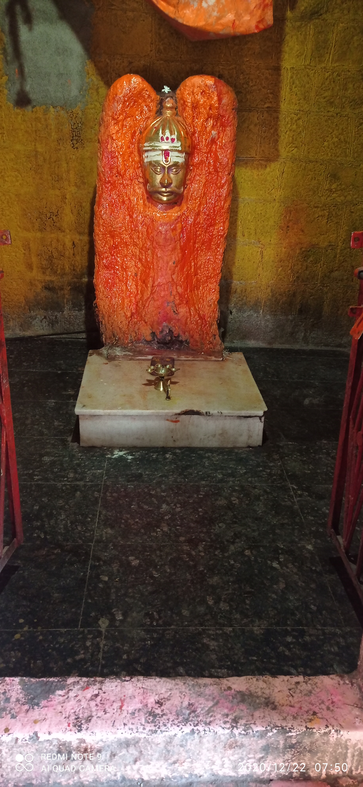

From the part of the NIJAMSHAHI sawargaon are sitted at their place. after the asking to some old people they said. long and long year ago Sawargaon are popular for their big quality which is growing wheat .which wheat was not be growing any other in maharashtra.according to saying of "old people" that time the soldier of maharashtraNIJAMSHAH was eating the bread of this wheat.
Past of this story as long and long year ago one incident are doing which is very horrable and fairyble.at the outside of the sawargaon a big distance.which was fullfillde by water( also now). Now.i am listening to a very horrable really stoy so please stay dairly!.
At the night of that nearbly 3 to 4 am all of the people in the village was sleeping,now that time very horrible sound was produced. which was very and very loudly saying "get up!,get up! a dam are brokened. you all will be finish."after the listening of this sound all people was getted up and goes to the direction of that sound. after the some time they all will be understand that the damwill be really damaged.inside the dam there are build a big like a small hill at the all sided.its all thing are occured automatically.there is a big fact which is if the small hill was not be build automatically then water are entering in the village and while village was be finised! after the occuring of this story all people are surprised.they think about some directly occured things like.who was created this sound. who was build this small hill like wall,etc. at the side of the dam there was a small BRAMHDEV TEMPLE.and all the people are saying its all be occured byBRAMHDEV.After that all people was making a big temple of the BRAMHDEV
since Now,Some people are saying In the whole india there is only one temple of BRAMHDEV and which is situated at the SAWARGAON.
BRAMHDEV TEMPLE.and all the people are saying its all be occured byBRAMHDEV.After that all people was making a big temple of the BRAMHDEV
since Now,Some people are saying In the whole india there is only one temple of BRAMHDEV and which is situated at the SAWARGAON.